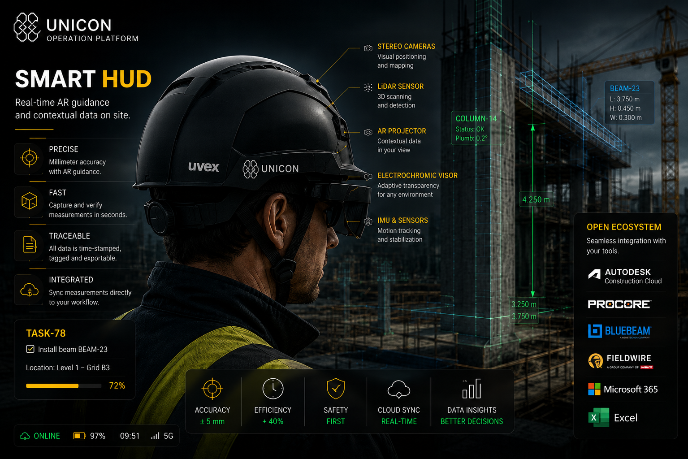
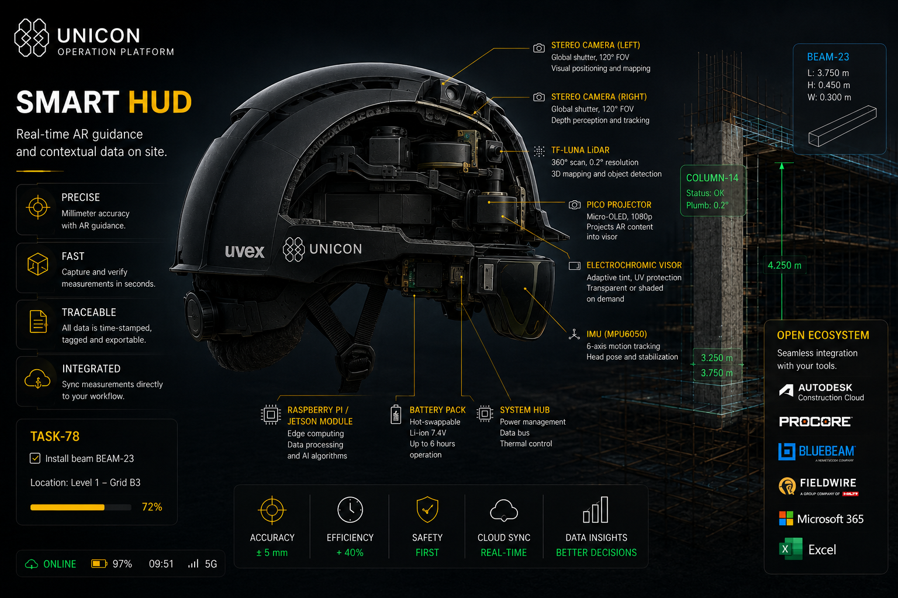
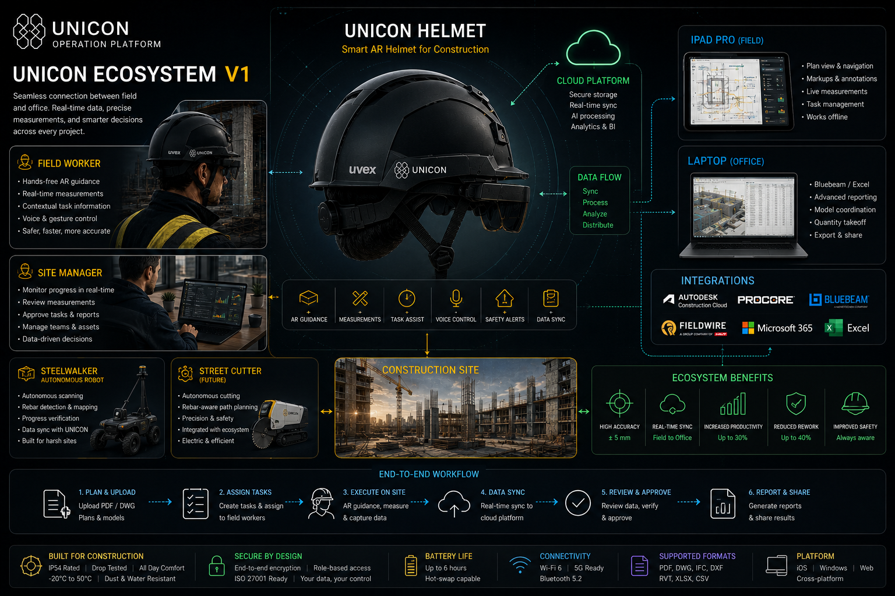

NOSMO Nexus™ connects people, projects, documents, site data, tasks and business memory in one intelligent workspace. Built first for construction. Designed to expand across admin-heavy businesses.
Contact UsPartnership EnquiryNOSMO Nexus™ turns scattered information into a searchable operational memory. Emails, documents, drawings, schedules, people, tasks, photos and project decisions become connected context instead of lost fragments across apps and folders.

Nexus keeps the familiar workflow: files, folders, emails and existing tools stay visible. The intelligence layer indexes, connects and explains them, while the user stays in control.
Add project folders, PDFs, Excel files, emails and approved business apps.
Extract names, dates, drawings, tasks, decisions and relationships from available information.
Create person and company cards connected to projects, documents, tasks and conversations.
Find project answers through natural language instead of manual searching.
Turn drawings, schedules and issues into clear field actions and status updates.
Return structured records, photos, notes and approvals back into the project memory.
Searchable operational memory across projects, documents, conversations and decisions.
PDF plan and Excel door schedule matching for construction door packages and site status.
People, roles, contact channels, responsibilities, linked files and project participation in one card.
Tasks, notes, documents, project status and evidence structured around real work.
Context-aware support for decisions, replies, summaries, task creation and document review.
Designed to sit over existing tools instead of replacing every system a company already uses.
NOSMO Nexus™ starts as a software platform: document intelligence, project memory, source indexing, structured workflows and human-approved AI actions. The blue NOSMO branch will later cover robotics, AR and hardware systems.

Keep your software. Add intelligence. Nexus is designed to work with normal business files, construction documents and established project tools rather than forcing a closed replacement system.
Planned integrations and connector architecture. Compatibility claims will be updated as adapters are developed and verified.

Drawings, schedules, site evidence, task visibility and progress tracking.
Door packages, room data, material status, snagging and installation records.
Maintenance history, task coordination, inspection records and contractor visibility.
Emails, orders, jobs, customer history and document-heavy workflows.
Orders, correspondence, documents, suppliers, delivery records and approvals.
Issue tracking, inspections, compliance evidence and safety-critical reporting.
Nexus software MVP: project workspace, files, DoorFlow™, person cards and AI-assisted search.
Construction operating layer: site evidence, task capture, structured workflows and reporting.
General business memory engine: email, documents, orders, customers, suppliers and admin workflows.
NOSMO ecosystem: AR, robotics, spatial intelligence and multi-device operational automation.
Developed by NOSMO Technology Limited. For partnership enquiries, demonstrations and technical collaboration, contact the NOSMO Nexus™ team.
Email: hello@nosmo.tech
Company: NOSMO Technology Limited
Location: Huddersfield, United Kingdom